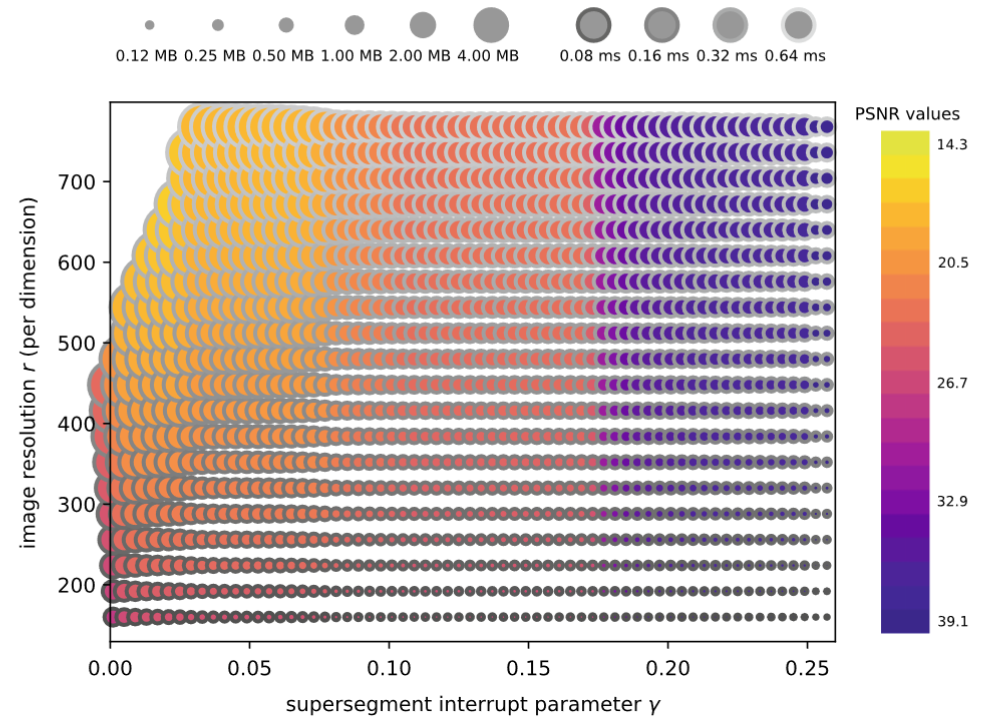

Parameter Adaptation In Situ: Design Impacts and Trade-Offs

In Situ Visualization for Computational Science (2022) Book Chapter
Authors
Steffen Frey, Valentin Bruder, Florian Frieß, Patrick Gralka, Tobias Rau, Thomas Ertl, Guido Reina
Materials
Abstract
This chapter presents a study of parameter adaptation in situ, exploring the resulting trade-offs in rendering quality and workload distribution. Four different use cases are analyzed with respect to configuration changes. First, the performance impact of load balancing and resource allocation variants on both simulation and visualization is investigated using the MegaMol framework. Its loose coupling scheme and architecture enable minimally invasive in situ operation without impacting the stability of the simulation with (potentially) experimental visualization code. Second, Volumetric Depth Images (VDIs) are considered: a compact, view-dependent intermediate representation that can efficiently be generated and used for post hoc exploration. A study of their inherent trade-offs regarding size, quality, and generation time provides the basis for parameter optimization. Third, streaming for remote visualization allows a user to monitor the progress of a simulation and to steer visualization parameters. Compression settings are adapted dynamically based on predictions via convolutional neural networks across different parts of images to achieve high frame rates for high-resolution displays like powerwalls. Fourth, different performance prediction models for volume rendering address offline scenarios (like hardware acquisition planning) as well as dynamic adaptation of parameters and load balancing. Finally, the chapter concludes by summarizing overarching approaches and challenges, discussing the potential role that adaptive approaches can play in increasing the efficiency of in situ visualization.